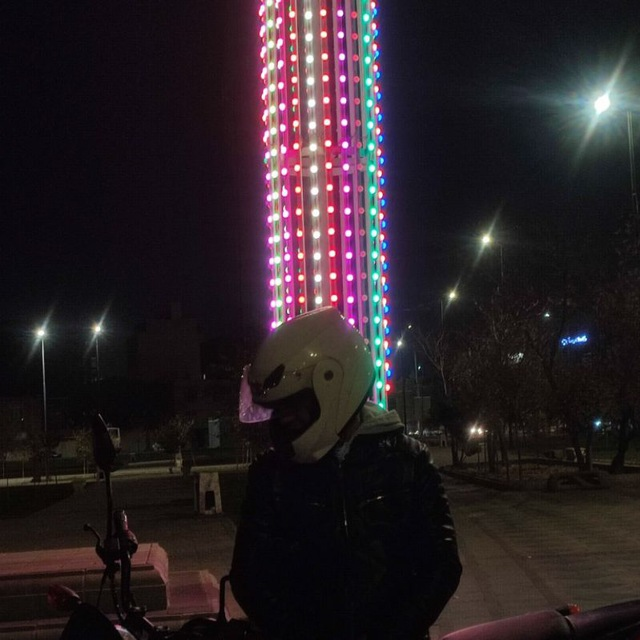
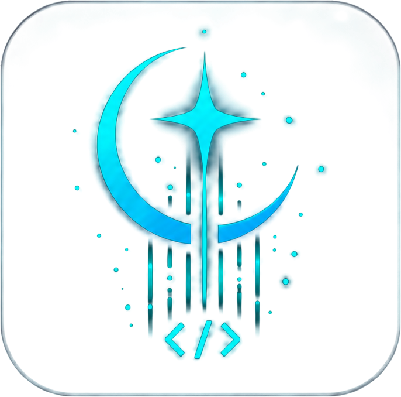

ENGINEER . AUTOMATE . INNOVATE
تیمی متخصص در توسعه وب، اتوماسیون هوشمند، بینایی ماشین و برنامههای دسکتاپ — از کد تا راهاندازی.
An Iranian team building web platforms, RPA pipelines, computer vision systems, and desktop applications — end to end.
خدمات ماWhat We Build
چهار حوزه تخصصی که در آنها عمیقترین تجربه داریم. Four disciplines we've gone deep in — no generalist hand-waving.
وبسایتهای سریع، واکنشگرا و بدون فریمورک — HTML خالص، CSS و JavaScript. Fast, responsive sites with zero framework overhead — pure HTML, CSS, and vanilla JS.
اتوماسیون فرآیندهای تکراری با Python — از اسکرپینگ تا ادغام سیستمهای سازمانی. Python-driven automation of repetitive workflows — scraping, scheduling, ERP sync, and beyond.
تشخیص اشیاء با YOLOv8 و OCR سفارشی برای استخراج داده از تصاویر و ویدئو در زمان واقعی. Object detection with YOLOv8 and custom-trained OCR models for real-time image and video analysis.
نرمافزار ویندوزی با Python — رابط کاربری سفارشی، دسترسی به فایل سیستم، و اجرای آفلاین. Windows desktop apps in Python — custom GUI, filesystem access, offline-capable, production-grade.
نمونه کارهاPortfolio
نمونهای از کارهایی که به آنها افتخار میکنیم. A selection of work we're proud to put our name on.
اعضای تیمThe People
کوچک اما متخصص — مهندس، طراح و متخصص اتوماسیون. A small, skilled Iranian crew — engineers, designers, and automation specialists who care about craft.

Founder · Full-Stack
معمار سیستمها و توسعهدهنده ارشد Python و PHP.Systems architect, senior Python & PHP developer.

Back-end
توسعهدهنده بکاند با تخصص در PHP و Python و طراحی APIهای مقیاسپذیر.Back-end developer specialising in PHP, Python & scalable API design.
Front-end
توسعهدهنده فرانتاند متخصص در React و Node.js با تمرکز بر رابطهای کاربری روان.Front-end developer specialising in React & Node.js, focused on smooth user interfaces.
UI/UX Design
طراح UI/UX با تمرکز بر تجربه کاربری، نمونهسازی تعاملی و سیستمهای طراحی. UI/UX designer focused on user research, interactive prototyping & design systems.